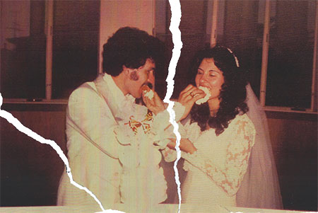
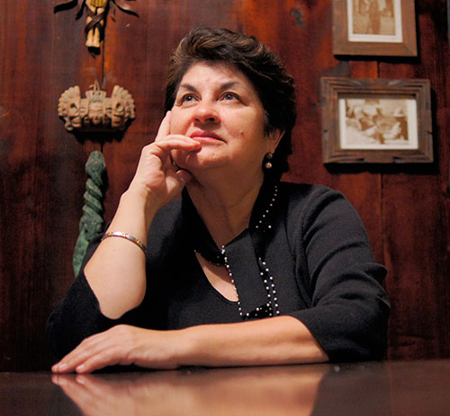

The music begins and everybody rises to their feet. Rows of people in dresses and ties look back, beaming with smiles. Luz walks forward, her uncle at her side. The decorations and flowers go unnoticed, a hazy blur in front of her.
The sound of sobs emanates from the back of the church, competing with the wedding music. Luz glances towards the sound, already knowing who it is. She sees her mother dressed in black, tears falling down her face. A distracting clash against the joyous sea of people.
Luz reaches the altar where she is given away like a sacrificial lamb to her groom dressed in a white tuxedo. No loving and happy looks are exchanged between the two. There is no eye contact. She stares at the floor, and tugs at the dress she designed; sweat clings to her body.
The ceremony begins.
The long traditional Catholic mass drags along, while Luz dozes off, fading in and out of her surroundings. She hears something that jolts her back into consciousness.
“Repeat after me,” said the priest. “I, Luz, take you, Agustine, to be my lawful husband.”
She recites without a second thought until she hears the words she cannot utter.
“…Until death do us part,” said the priest.
The smiling faces in the pews evolve into concerned looks. The silence is palpable. The bridesmaids and priest lean in as he repeats.
“…Until death do us part.”
She is frozen. Her gaze rips from her groom’s feet, and sees a crucifix directly behind him. She prays in desperation.
I know I don’t love him, but his is my only way out. I know there have been many marriages made without love. Help me to learn to love him.
Dramatic sobs invade her ears and she gains feeling in her hands, placed in his the entire time. She looks at him for the first time since the night before. And like a leap into an unknown abyss, she repeats after the priest.
“Until death do us part.”
...
Luz walks through the front door, juggling a stack of books against her body, tired from the bus ride home. Once inside, she searches through her mental checklist. Take off uniform, hang it up. Help mom cook dinner. Biology homework.
Her thoughts are disrupted when she finds her mother standing in front of the couch with a stack of envelopes in her hand; a grave look on her already stern face. “Hi mom. I’m home,” Luz said. No greeting is given in return.
“I want to talk to you.”
Luz places her books on the coffee table, but does not approach her mother.
“I understand that you’ve been accepted to colleges. Especially ones out of state.”
Luz’s heart jolts as she sees the envelopes in her mother’s hands, realizing what they mean. Looking down at her shoelaces she replies,“Yes mommy, I did.”
“You are only going to leave this house two ways: In a white dress or in a coffin. I gave you life and I have the power to take it away. If you leave any other way, you stop being my daughter.”
Luz looked at her mother. Nothing could be said. It was a statement of fact and there was no refuting it. Luz watched her mother walk away, envelopes in hand. Without saying a word, she walked into her room, took off her uniform, and hung it impeccably in the closet. She layed down on her twin bed and cried silently, fearing her mother would hear her.She never saw those envelopes again.
...
It was a Sunday morning after church. Luz and Agustine sit across from each other in uncomfortable chairs with breakfast and coffee on the table. It’s a busy day at the diner. The sound of bacon sizzling accompanies his narcissistic ramblings while she remains quiet, listening, and picking at her food absentmindedly.
As if it was the most natural thing to bring up at breakfast in a public place, Agustine proclaims, “I had women right up until the day that we got married.”
Luz snaps out of her daze, shocked.
“What?”
He shrugs off her reaction, smirking.
“Well you wouldn’t have sex with me. So I had to get it somewhere,” he chuckles, taking a bite of his eggs.
Luz looks around and makes sure nobody is listening. He said it with such ease. She releases the tightly held fork, while the rest of her body cripples in disbelief.
“Did she know about me?”
“No. She didn’t find out until she found out that I was getting married,” he said laughing.
“How could you do that? I can’t believe you.”
“What? She was used goods. I got what I needed from her.”
He dismisses her reaction and continues with his breakfast.
Luz waits for him to finish. He sits back with a satisfied look on his face and both get up in silence. They walk out of the restaurant, leaving two plates on the table. One empty and one filled with cold bacon and eggs. Once they reach home, Luz heads straight into her sewing room. The only place in the entire house she feels comfortable in. She opens the door to a room with white walls and one narrow window, high up on the far wall.
She takes a piece of champagne colored fabric and drapes it on a mannequin. Her hands experiment with shapes as they glide over the velvety quiana. She pins it so that it falls and flows effortlessly down the bodice. She lays down a brown piece of butcher paper on the hard linoleum floor and kneels over it.
A pattern is soon traced out and she begins to cut the delicate fabric with a sharp razor blade, following the lines, taking her into another world. She sits in the center of the room until her legs are void of feeling and her cutting is complete
She gets up and continues until a piece of clothing is finished on the mannequin. It is dark outside.
...
After a Sunday morning of thick silence and avoidance, they tolerated each other during mass, acting like a happy couple. Once home, Luz got out of the car and walked in after him, heading directly toward their room. The masks came off and tension filled the air. There had been no fight. They hadn’t spoken to each other in a week. She sat on the bed they slept in every night. The light from the window shone on her face. But it was soon extinguished by a large dominating shadow.
He was standing in front of her, towering. She raised her chin to look at him while he said in a blunt, matter-of-fact tone:
“You know, we haven’t had sex in a week,” he said.
“Yeah, so?” She crossed her arms and scooted a little further back on the bed. He took a slight step forward, closing the distance.
“We haven’t had sex in a week,” he repeated, “and you made a vow when you became my wife. You need to honor it.”
Challenging him, she declared, “Well I don’t want you to touch me. I didn’t realize that I vowed to have sex with you against my will.”
“You’re my wife. I own you.”
“I can’t believe you would take me against my will.”
As if she hadn’t said anything at all, he took half a step back and started to unbutton his shirt. His gaze was searing into her skin and all she did was look away. He shifted his position to remove her clothes, letting the light back in. She gazed into the light, while every nerve in her body shut down. Her limbs became lifeless, succumbing to his direction, shifting at his whim.
He lowered his demanding body over her bare skin and took what, he thought, was rightfully his. He finishes and removes himself, leaving a broken woman on the bed. Luz turns on her side, covering whatever she can on her body. Tears slide down her face, dampening the tainted sheets. Her eyes follow the specks of dust illuminated by the sunlight. She searches for the answer bombarding her mind.
Where am I going to go?
On a scorching summer day three cars pull into the driveway. Nobody gets out. The anticipation of four people rests on Luz’s shoulders. She sits in the passenger seat of the first car with her right hand frozen on the door handle. She doesn’t realize that everybody is waiting for her. She glances to the window on the second floor where she spends so many sleepless nights. She then focuses on the door that she dreads walking through every day.
One last time, she tells herself. She reaches the white door after climbing three exhausting stairs, the weight pushing her down. Her friends timidly wait behind her. She takes a deep breath, grabs the cold doorknob and turns it.
The silence dissipates and everybody starts moving in a hurry.
“Get those books,” Luz said, pointing. “And those CD’s at the bottom of the shelf.”
Luz passes the crystal vases she loved. She sweeps her hand over the kitchen table, looking at it longingly. She jerks her hand away and enters the room where most of her prized belongings were kept. In a nervous fit, she takes her clothes and stuffs them in the suitcases with the hangers still on. Nobody bothers to neatly pack anything.
“What if he comes home early?” questions one of her friends.
“He won’t,” Luz replies, speeding up her pace.
The last piece of clothing is wrapped in a white garment bag – the same dress she wore when she entered this world. Her fingers extend toward the zipper. Before they reach, the fingers fold into her palm and she snatches the bag off the rack, throwing it in with the rest.
She scavenges every part of the house for pictures. Any sign of their marriage could not stay there. The frame with a marriage license was shoved in a box along with all of her photos. It looked like a bachelor pad, as if she never lived there.
“We got everything,” said another friend.
But the house didn’t look ransacked in the slightest. All the furniture remained intact. No sign of removal was apparent. Luz enters the kitchen, passing the table. She opens the cabinet above the stove and grabs the pots and pans her mother gave her as a wedding present and closes the cabinet. She made so many unappreciated meals with them.
She turns away and walks toward the front door. Her friends are already in their cars, filled with clothes and books. She steps past the threshold and pauses. She turns her head, looking in the living room.
She glances at the couch. The marked impression on the left cushion is visible. He always sat there, beer in hand, waiting for dinner or sex.The throne of tyranny. She could almost see him sitting there, demanding that she replace his beer. She is startled by a honk outside.
She tightly grasps the door knob, pots in hand and closes the door on four years of her life.